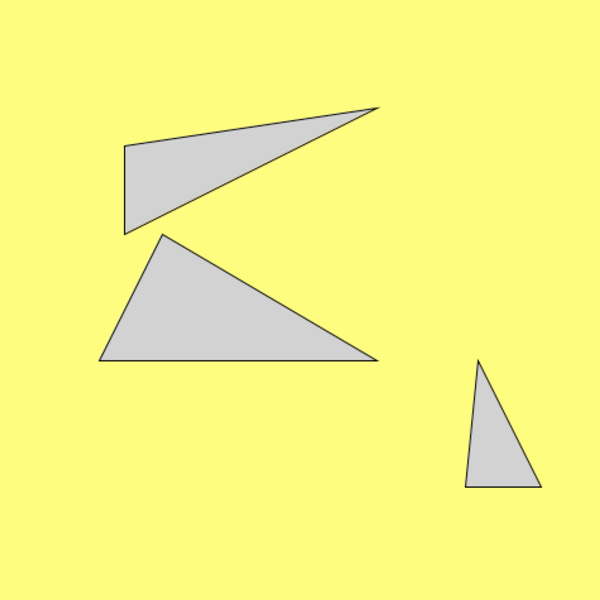
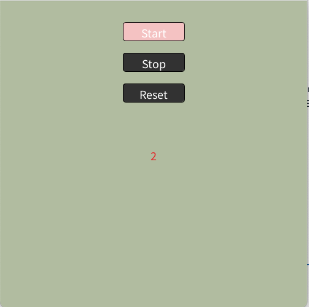
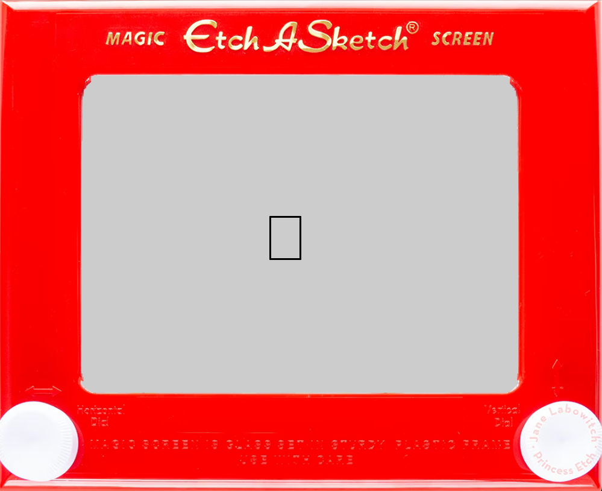
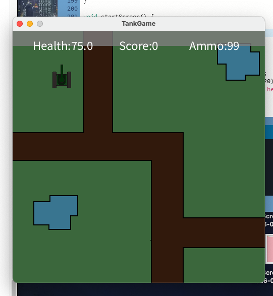

Certifications

ECS projects:
Typing Results

This typing test was taken at the begining of the year, as of todays time My typing speed has improved
Shape Game

This game is coded using Scratch. I designed the characters using Pixlr. This process was difficult at first but it got easier as I kept editing it. In this game the monkey has a set amount of time to reach the watermelon. If the monkey can't reach the watermelon in time, the game ends.
Link to RepoTimeline

This time line shows the life of the person who released the first book, Johannes Gutenberg. In this timeline we see when he started making protoypes for the press and when he got sued for his ideas. Most importantly we see when he released the first book.
Mood Screen

Download my PDE fileIn this assignment I created different screens with different moods. I used red, blue, and yellow to represent different emotions.
Timer

In this assignment I created a stopwatch that has the ability to stop, start and restart.
Link to RepoEtch A Sketch

In this assignment A made an etchh-a-sketch, it can draw anything
Link to RepoTank Game

link to RepoIn this assignment I created a tank game that shoots/avoids rocks and get powerups. Something broke in the code and now the rocks wont show up though.